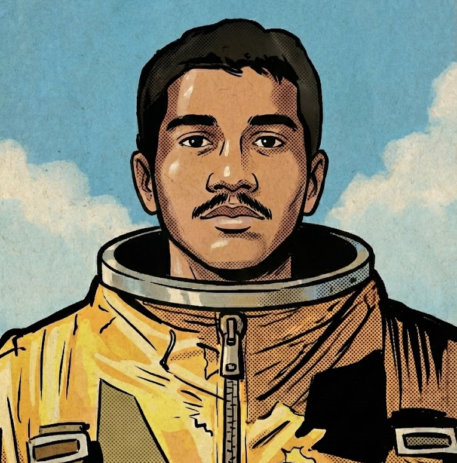
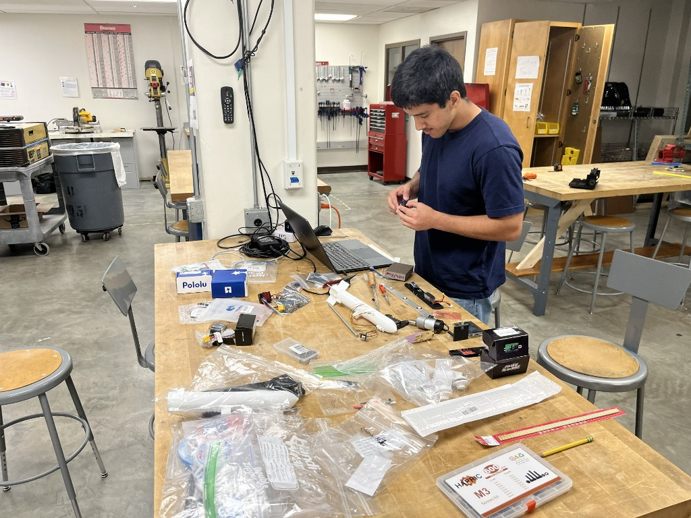
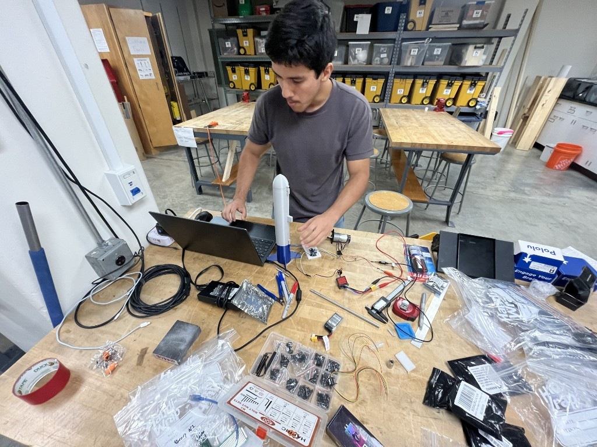

'" />About
Systems | Engineering | Steady Work
I'm a senior Mechanical Engineering student at WashU. Most weeks I'm at a bench with a laptop next to printed parts, wiring, and a vehicle that has to work under real constraints.
My focus is UAV systems, sensing, controls, and hardware integration. I start from constraints, keep interfaces clear, and check claims against test data. I'm looking for a Summer 2027 engineering or research internship in aerospace or autonomous systems, and for graduate study in Mechanical or Aerospace Engineering centered on integration, test, and controls.
Hands-on
In the shop
MEMS 4110 senior design: a motorized towed-sensor winch for the AIAA DBF 2026–27 Mission 3 theme.


Initial prototype built and tested. Final prototype is printing. Mechanical design, electronics, and embedded control on one bench.
Project briefDirection
Focus areas
The parts of engineering I move toward most.
Architectures where sensors, power, control, telemetry, and software all have to agree under real constraints.
Clarifying interfaces, integrating subsystems, reading behavior from data, and reducing ambiguity before flight or test.
Systems that sense, estimate, and respond in the real world instead of only inside theory.
Working at the boundary between embedded systems, state estimation, control logic, and physical behavior.
The moment when ideas have to face reality and the system either proves itself or teaches you where it is weak.
Turning assumptions into checks, connecting logs back to behavior, and making sure design claims survive contact with test data.
Process
Systems workflow
Define what must be true, make interfaces explicit, run a small honest check, read the data, then fix the weak point.
-
01Constraints
-
02Interfaces
-
03Test
-
04Data
-
05Refine
Languages
Embedded / Control
Design / Analysis
Focus Domains
Approach
Engineering principles
The habits that show up most in how I approach problems.
I try to understand what the system is actually being asked to do before jumping into tools, opinions, or complexity. That usually makes better decisions possible much earlier.
Hidden assumptions create fragile systems. I would rather expose them early, write them down clearly, and let testing decide whether they survive.
Logs, measurements, and behavior matter more than what the design was supposed to do. Staying close to data keeps the work honest and cuts through ego quickly.
Good engineering is not only about solving your own part well. It is also about making interfaces cleaner, documentation clearer, and collaboration easier for everyone else.
Next
What I'm aiming for
- • Take a Summer 2027 internship in aerospace or autonomous systems, then join teams that turn hard goals into testable steps.
- • Build tools and workflows that make integration easier for the whole team.
- • Stay close to hardware, telemetry, and test so design choices match real behavior.
- • Grow into a systems engineer who simplifies complexity and decides well with incomplete data.